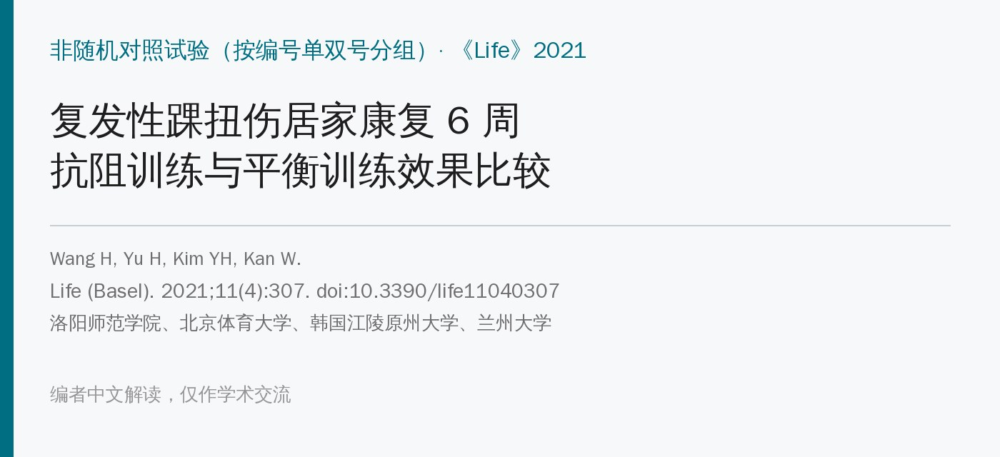
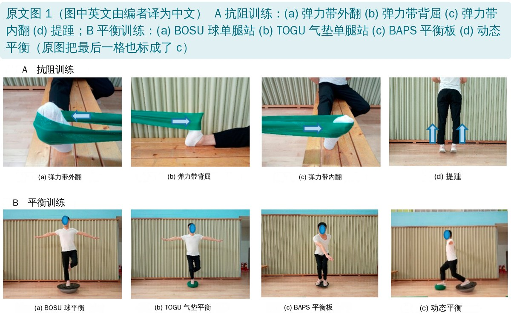
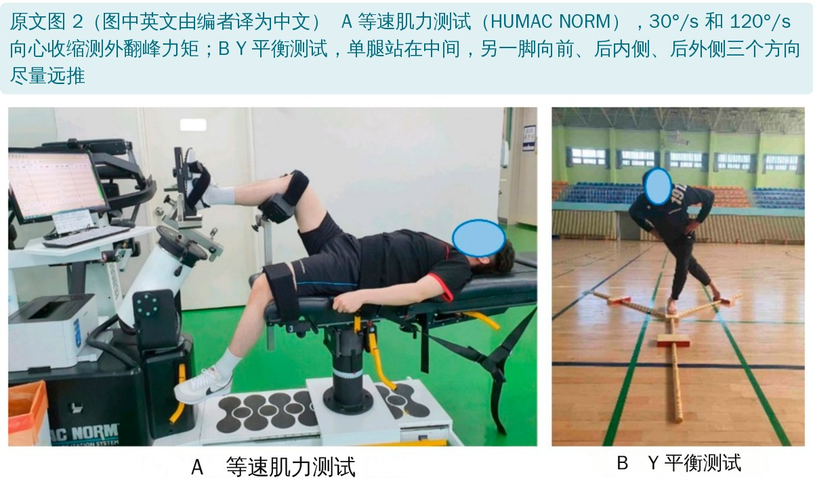
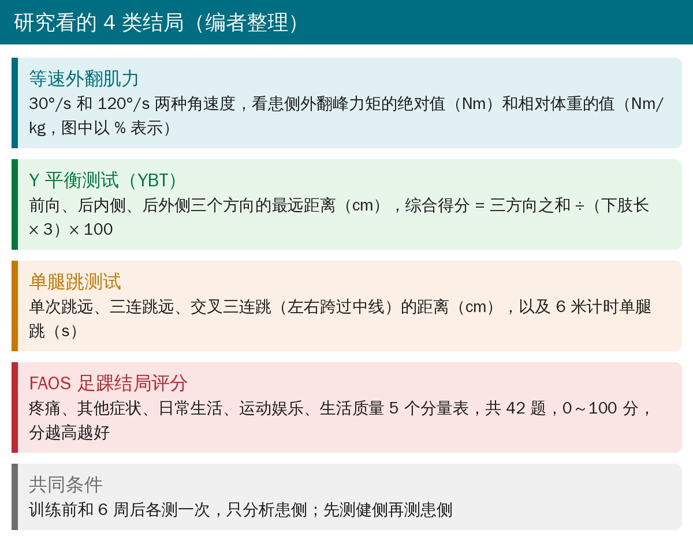
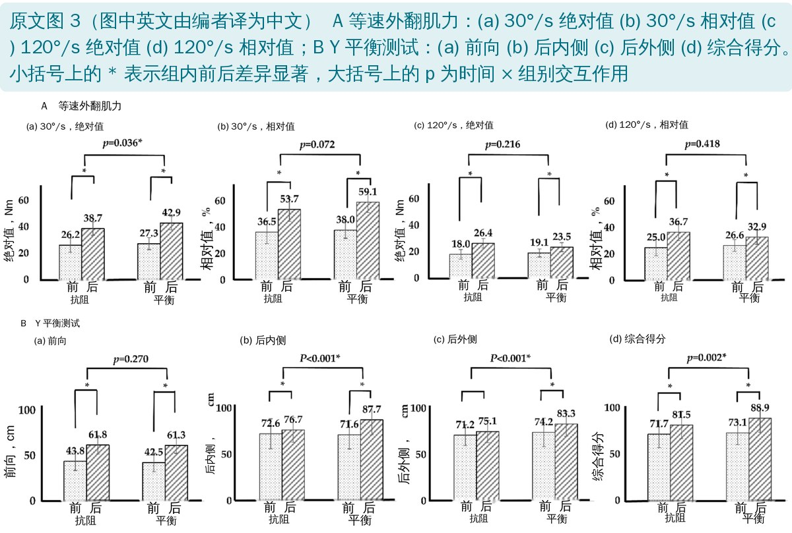
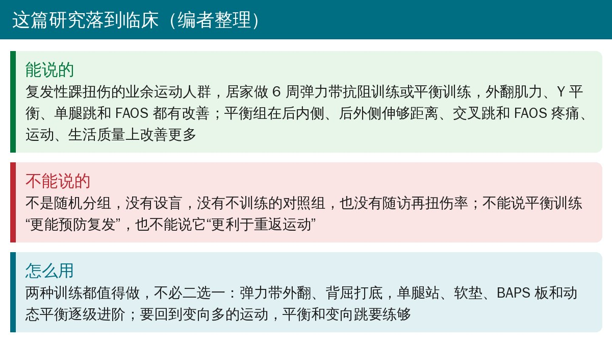

🔖原文信息（编者中文重排）
📚 文献信息
▪ Wang H, Yu H, Kim YH, Kan W. Comparison of the Effect of Resistance and Balance Training on Isokinetic Eversion Strength, Dynamic Balance, Hop Test, and Ankle Score in Ankle Sprain. Life (Basel). 2021;11(4):307. doi:10.3390/life11040307
▪ 中文题目：抗阻训练与平衡训练对踝扭伤患者等速外翻肌力、动态平衡、单腿跳和踝关节评分的影响比较
▪ 作者单位：洛阳师范学院体育学院、北京体育大学、韩国江陵原州大学体育系、兰州大学体育教研部
▪ 文章类型：两组前后对照的干预研究，按编号单双号分组（不是真正的随机），没有不训练的对照组，每组 27 人
外侧踝扭伤是最常见的运动损伤之一，复发率 12%～47%，有扭伤史的人再扭伤的风险是常人的 3.5 倍；反复扭伤的人里 40%～70% 会发展成慢性踝关节不稳（CAI）。
康复训练大体有两条路：一条是抗阻训练，用弹力带练腓骨肌、胫前肌，把力量练回来；另一条是平衡训练（也叫神经肌肉训练、本体感觉训练），站在 BOSU、平衡垫、BAPS 板上练控制。两种方法各自都有效，但直接对比的研究不多，而且多数在职业运动员身上做。
这项研究在业余运动人群里，让复发性踝扭伤的患者居家练 6 周，比较抗阻和平衡训练在肌力、动态平衡、单腿跳和主观评分上的差别。作者事先的假设是：两种都有效，但平衡训练更好。
• 对象：2017～2018 年到运动康复中心就诊的 20～39 岁复发性踝扭伤或 CAI患者 54 人，都是参加业余运动的活跃人群；距腓前韧带或跟腓韧带 I～II 度损伤
• 排除：双侧受伤、踝关节手术史、VAS ≥ 6 分、内外翻活动度 < 35°（做不了等速测试）、不能单腿站
• 分组：按受试者编号的单双号分到抗阻组（RT，27 人）或平衡组（BT，27 人）；两组年龄（约 28 岁）、身高、体重、BMI、受伤侧和受伤原因都没有差别
• 训练：6 周、每周 5 天、每天 2 次、每次约 20 分钟，居家进行；发小册子和视频，通过手机由运动专家答疑并记录进度
• 评估：训练前和 6 周后各一次，只分析患侧——等速外翻肌力（30°/s、120°/s）、Y 平衡测试、4 项单腿跳、FAOS 问卷
• 统计：数据不服从正态分布，组间用 Mann–Whitney U、组内前后用 Wilcoxon 符号秩检验，另用两因素重复测量方差分析看“时间 × 组别”交互作用（T × G），P < 0.05

🔖原文图 1（图中英文由编者译为中文）
原文表 1 抗阻训练（RT）与平衡训练（BT）6 周进阶方案
| 周 | 抗阻训练（弹力带） | 平衡训练 |
|---|---|---|
| 第 1 周 | 黄色带 内翻＋外翻 20 次 × 3 组 | 地面 单腿站 20 s × 3 组 |
| 第 2 周 | 红色带 内翻＋外翻 20 次 × 4 组 跖屈＋背屈 20 次 × 4 组 | BOSU 硬面（平面朝上） 双腿站 20 s × 3 组 单腿上下 10 次 × 3 组 |
| 第 3 周 | 绿色带 内翻＋外翻 20 次 × 5 组 跖屈＋背屈 20 次 × 5 组 提踵 20 次 × 3 组 | BOSU 软面（球面朝上） 双腿站 20 s × 3 组 单腿上下 20 次 × 3 组 双腿站转体 10 次 × 3 组 |
| 第 4 周 | 蓝色带 内翻＋外翻 30 次 × 4 组 跖屈＋背屈 30 次 × 4 组 提踵 / 抬前脚掌 20 次 × 4 组 | BAPS 板 双腿站 30 s × 3 组 单腿上下 20 次 × 3 组 双腿站转体 20 次 × 3 组 |
| 第 5 周 | 黑色带 内翻＋外翻 30 次 × 5 组 跖屈＋背屈 30 次 × 5 组 提踵 / 抬前脚掌 20 次 × 5 组 | TOGU 气垫 双腿站 30 s × 3 组 单腿上下 20 次 × 3 组 双腿站转体 20 次 × 3 组 深蹲 10 次 × 3 组 |
| 第 6 周 | 灰色带 内翻＋外翻 30 次 × 5 组 跖屈＋背屈 30 次 × 5 组 提踵 / 抬前脚掌 30 次 × 5 组 | TOGU 气垫 双腿站 30 s × 3 组 单腿上下 20 次 × 5 组 双腿站转体 20 次 × 5 组 深蹲 20 次 × 3 组 |
编者翻译。原表抗阻组只列了弹力带动作，正文另提到深蹲；平衡组第 5、6 周的深蹲也在 TOGU 上做。正文写的弹力带颜色和表里不一致，见文末“原文里对不上的地方”
• 弹力带（Thera-Band）固定在离踝 30 cm 处，保证每次阻力一致
• 以外翻和背屈为主，练腓骨肌和胫前肌；内翻、跖屈一起练，照顾踝周整体力量
• 每周换一种更硬的颜色；进阶靠 3 个方面：弹力带阻力、次数和组数、动作速度
• 自重动作：提踵、抬前脚掌、深蹲
• 站在 BOSU、TOGU 气垫等不稳定平面上，尽量保持身体居中；家里没有器材可以用枕头代替
• 保持 20～30 秒，或者做 10～20 次站立、上下、转体动作，3～5 组
• 进阶 5 个维度：硬面 → 软面、时间加长、在器材上做上下和转体、双脚 → 单脚、部分负重 → 完全负重
• 开练前检查周围有没有危险物品，从低难度开始，避免摔倒

🔖原文图 2（图中英文由编者译为中文）

🔖四类结局指标说明（编者根据原文整理）

🔖原文图 3（图中英文由编者译为中文）
等速外翻肌力和 Y 平衡测试（数值读自原文图 3，训练前 → 训练后）
| 指标 | 抗阻组 | 平衡组 | T × G 的 P |
|---|---|---|---|
| 30°/s 绝对值（Nm） | 26.2 → 38.7 | 27.3 → 42.9 | 0.036 |
| 30°/s 相对值（%） | 36.5 → 53.7 | 38.0 → 59.1 | 0.072 |
| 120°/s 绝对值（Nm） | 18.0 → 26.4 | 19.1 → 23.5 | 0.216 |
| 120°/s 相对值（%） | 25.0 → 36.7 | 26.6 → 32.9 | 0.418 |
| YBT 前向（cm） | 43.8 → 61.8 | 42.5 → 61.3 | 0.270 |
| YBT 后内侧（cm） | 72.6 → 76.7 | 71.6 → 87.7 | < 0.001 |
| YBT 后外侧（cm） | 71.2 → 75.1（组内无显著差异） | 74.2 → 83.3 | < 0.001 |
| YBT 综合得分 | 71.7 → 81.5 | 73.1 → 88.9 | 0.002 |
相对值为峰力矩 ÷ 体重（Nm/kg）× 100。T × G：时间 × 组别交互作用，P < 0.05 说明两组的改善幅度不同
• 两组外翻肌力都显著提高，平衡组也一样——没练弹力带，外翻力量照样涨了
• 组间差别只有 30°/s 绝对值一项有统计学意义；120°/s 时反而是抗阻组涨得多一点（不显著）
• 平衡组三个方向都显著改善；抗阻组后外侧没有显著改善
• 后内侧、后外侧和综合得分的改善平衡组更多；前向两组差不多（都涨了约 18 cm）
原文表 3 单腿跳测试（均数 ± 标准差）
| 测试 | 组别 | 训练前 | 训练后 | 组内 P | T × G 的 P |
|---|---|---|---|---|---|
| 单次跳远（cm） | 抗阻 | 136.4 ± 20.5 | 163.4 ± 22.3 | 0.004 | 0.549 |
| 平衡 | 137.4 ± 27.0 | 164.6 ± 25.5 | 0.004 | ||
| 三连跳（cm） | 抗阻 | 450.3 ± 51.5 | 483.7 ± 49.6 | < 0.001 | 0.225 |
| 平衡 | 444.4 ± 63.1 | 475.6 ± 64.4 | 0.006 | ||
| 交叉三连跳（cm） | 抗阻 | 401.9 ± 25.7 | 412.6 ± 30.6 | 0.070 | 0.008 |
| 平衡 | 405.5 ± 66.4 | 455.4 ± 63.1 | 0.002 | ||
| 6 米计时跳（s） | 抗阻 | 2.28 ± 0.19 | 2.11 ± 0.15 | 0.022 | 0.233 |
| 平衡 | 2.29 ± 0.15 | 2.08 ± 0.09 | < 0.001 |
编者翻译。训练后组间比较：交叉三连跳 P = 0.025，其余不显著
• 单次跳、三连跳、6 米跳两组都改善，幅度差不多
• 交叉三连跳平衡组多了约 50 cm，抗阻组只多了约 11 cm 且组内不显著——交叉跳要左右变向，更考验动态控制
原文表 4 FAOS 评分（均数 ± 标准差，0～100 分，越高越好）
| 分量表 | 抗阻组 前 → 后 | 平衡组 前 → 后 | T × G 的 P |
|---|---|---|---|
| 总分 | 70.3 → 91.2 | 65.0 → 93.5 | 0.155 |
| 疼痛 | 69.0 → 90.0 | 65.0 → 94.5 | 0.022 |
| 其他症状 | 73.0 → 93.7 | 72.8 → 96.0 | 0.316 |
| 日常生活 | 78.9 → 88.1 | 75.9 → 90.4 | 0.250 |
| 运动娱乐 | 75.9 → 87.4 | 74.3 → 93.0 | 0.027 |
| 生活质量 | 58.9 → 89.2 | 57.0 → 95.0 | 0.033 |
编者翻译并省略了标准差。两组所有分量表组内前后比较均 P < 0.001
• 两组 FAOS 全部显著改善，总分都从 65～70 分升到 90 分以上
• 平衡组在疼痛、运动娱乐、生活质量三项改善更多；总分、症状、日常生活两组没有差别
• 生活质量提升最大：平衡组从 57 分到 95 分，抗阻组从 59 分到 89 分
• 平衡训练也能涨力量：作者给了三种解释——运动学习里的“训练迁移”；在不稳定平面上单腿站会同时激活胫前肌、腓骨长肌和腓肠肌（以往 BOSU 肌电研究）；每次约 20 分钟的站立本身就有肌耐力负荷
• 也可能是自然恢复：炎症和疼痛消退后功能本来就会好转，作者承认要有对照组才能区分
• 抗阻训练也能改善平衡：与老年人下肢力量训练改善平衡的研究一致；踝、膝、髋力量与 YBT 成绩相关
• 交叉跳平衡组更好，作者认为平衡组更熟悉左右变向的动态情境
• 作者的建议：跌倒风险高的人先做抗阻训练更安全；只能带便携器材的人适合弹力带；想重返运动、运动参与度高、疼痛和生活质量差的人应以平衡训练为主
• 不是随机分组：按编号单双号分组属于“准随机”，如果编号按就诊顺序发放，研究者可以预知分组；也没说分组是否隐藏
• 没有设盲：没有说测试者是否知道受试者在哪一组；FAOS 是患者自填的，患者知道自己练的是什么
• 没有不训练的对照组：两组都明显改善，但很大一部分可能是自然恢复或测试的学习效应（YBT 和单腿跳练过一次就会进步）
• 居家训练，依从性没报告：每天 2 次、每周 5 天、共 60 次，实际完成了多少没有交代；也没有报告有没有人脱落、有没有不良事件
• “复发性踝扭伤”定义模糊：没有报告扭伤次数、距上次扭伤多久，也没有用 CAIT 或国际踝关节联盟（IAC）的标准筛选 CAI；最近一次扭伤离入组越近，“自然恢复”的成分越大
• 组间差异多数在 FAOS 的天花板附近：训练后两组 FAOS 都在 87～95 分，疼痛分量表差 4.5 分、运动分量表差 5.6 分，是否达到最小临床重要差异原文没讨论
• 多重比较：4 类结局共十几个指标，每个都单独做检验，没有校正，零星几个 P 在 0.02～0.04 的结果要谨慎看
• 没有看最重要的结局：作者自己也承认没有随访再扭伤率，所以不能说哪种训练更能预防复发
• 优点：两套方案按周写得很具体，有进阶、器材简单，居家可以照做；结局指标覆盖了肌力、平衡、功能和主观评分
• 弹力带颜色前后矛盾：正文说用了黄、红、蓝、黑、银 5 种颜色、“每种颜色练 1 周，6 周内从黄到银”，5 种颜色排不满 6 周；表 1 列的又是黄、红、绿、蓝、黑、灰 6 种，没有银色
• 伦理批准晚于研究：研究对象是 2017～2018 年的患者，伦理批号却是 GWNUIRB 2021-13，投稿日期是 2021 年 2 月 18 日。如果批准真在 2021 年，那就是研究结束后补批，属于回顾性审批
• 统计方法自相矛盾：方法里说 K–S 检验显示数据不服从正态分布，所以用 Mann–Whitney U 和 Wilcoxon；但同时又用了要求正态性的两因素重复测量方差分析，而且文中最关键的组间结论恰恰来自方差分析
• 表 2 的卡方检验 P 值算不出来：编者用表中人数重算，优势侧 2/25 对 4/23，P ≈ 0.39（Pearson）或 0.67（校正 / Fisher），文中 0.541；受伤侧 10/17 对 12/15，P ≈ 0.58 或 0.78，文中 0.419；受伤原因 8/19 对 10/17，P ≈ 0.56 或 0.77，文中 0.845。三项都对不上，但都不显著，不影响结论
• 表 4 有两组数字完全一样：抗阻组“运动娱乐”训练前 75.9 ± 14.0、训练后 87.4 ± 7.8，平衡组“日常生活”训练前也是 75.9 ± 14.0、训练后 SD 也是 7.8，可能是抄录错误
• 抗阻组交叉跳没有显著改善：表 3 抗阻组交叉跳组内 P = 0.070，正文却说单腿跳“两组都显著改善”，结论也写“6 周 RT 和 BT 都改善了下肢跳跃功能”，没有把交叉跳单独说明
• 摘要和结论把“动态平衡”说满了：结论说平衡组在“动态平衡”上更有效，但 YBT 前向的交互作用 P = 0.270；讨论又说平衡组“在力量上也稍微更有效”，而 4 项肌力指标只有 1 项有组间差异，120°/s 时抗阻组的提升还更大
• “重返运动”没有测：结论建议“为重返运动应强调平衡训练”，但研究只测了 FAOS 的运动娱乐分量表，没有测重返运动率或重返时间
• 性别没有报告：表 2 没有性别，局限性里却说以后要“纳入女性”，暗示受试者全是男性，但方法里没写
• 流行病学数据写错：讨论说“美国每年约 200 万人、英国约 5600 人每天因踝扭伤看急诊”，把两个口径混在一句里，读起来像美国“每天 200 万人”
• 引用张冠李戴：讨论说“O’Driscoll 等 [33] 对功能性不稳的大学生做了 6 周平衡训练”，但 [33] 是个案报告，不是大学生群体研究；前文又引用 [33] 说它改善了“踝关节不稳工具得分的距离”，这个说法本身不通。支持“平衡训练提高力量”时引用的 [34] 是 BOSU 肌电研究，并没有测训练后的力量变化
• 等速测试的体位：正文说受试者“仰卧、屈膝 90°、大腿固定在垫上”，又说“腿、腰和躯干固定在座椅上”，两种描述混在一起
• 小笔误：原文图 1 平衡训练最后一格应为 (d)，图中标成了 (c)；图 3 纵轴 “Posterior median” 应为 “Posterior medial”（后内侧）；表 1 第 5、6 周平衡组多出一行重复的“Balance instrument: TOGU”

🔖临床要点（编者整理）
• 两套 6 周居家方案可以直接参考：每周 5 天、每天 2 次、每次 20 分钟左右；弹力带每周升一档，平衡训练从地面 → BOSU 硬面 → 软面 → BAPS → 气垫逐级进阶
• 不必二选一：两种训练都让肌力、平衡、跳跃和主观评分改善，而且有“交叉”效果；临床上通常两者结合，先抗阻打底，再逐步加入不稳定平面和动态平衡
• 要回到变向多的运动：交叉跳和后内、后外侧伸够的差距提示，平衡和变向控制要专门练，光练弹力带不够
• 对证据保持克制：非随机、无盲法、无空白对照、无再扭伤随访，“平衡训练更好”只能算初步证据；预防复发方面，支具和神经肌肉训练都有更高质量的随机对照试验可参考
• 家里练平衡要先清理周围、从低难度开始；跌倒风险高的患者先以抗阻训练为主
欢迎关注骨科康复小黄公众号，获取更多物理治疗的专业知识！
📄参考文献：
Wang H, Yu H, Kim YH, Kan W. Comparison of the Effect of Resistance and Balance Training on Isokinetic Eversion Strength, Dynamic Balance, Hop Test, and Ankle Score in Ankle Sprain. Life (Basel). 2021;11(4):307. doi:10.3390/life11040307
原文以 CC BY 4.0 协议开放获取（© 2021 by the authors，MDPI 出版）。本文为学术交流中文解读：原文图 1～3 中的英文由编者译为中文；表格为编者中文翻译，部分有删减；首图、指标说明卡和临床要点卡为编者根据原文整理；文中重新计算的 P 值为编者根据原文给出的人数推算。仅供学习交流，如有侵权请联系删除。